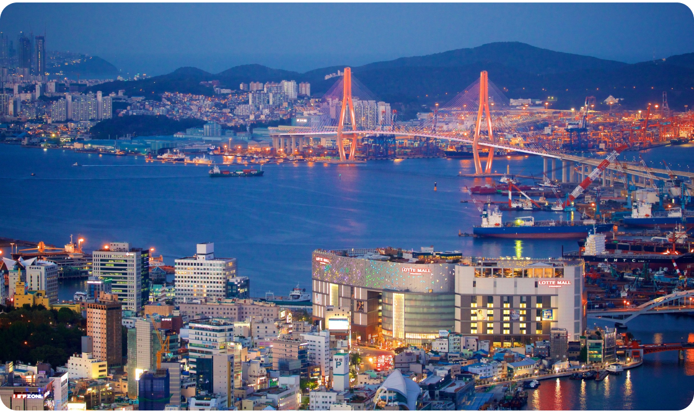

Aos amantes de História e Cultura
Busan, a segunda maior cidade da Coreia do Sul, é uma grande cidade portuária localizada na costa sudeste do país. Conhecida por suas praias, montanhas e templos centenários, Busan oferece uma mistura vibrante de atrações naturais e culturais. A agitada praia de Haeundae abriga o Sea Life Aquarium e uma praça com jogos tradicionais, como cabo de guerra, enquanto a praia de Gwangalli é famosa pelos seus muitos bares e pelas vistas para a moderna Ponte Gwangan. O mercado de peixes de Jagalchi é outro ponto turístico popular, oferecendo uma experiência única de mercado marítimo. O templo Beomeosa, um santuário budista fundado em 678 d.C., fica ao pé da montanha Geumjeong, que possui trilhas para caminhada. Além disso, Busan é reconhecida por suas festas de cinema internacionais, como o renomado Festival Internacional de Cinema de Busan.
Descubra os 4 destinos imperdíveis em Busan
1. Templo Haedong Yonggungsa
Bom para: